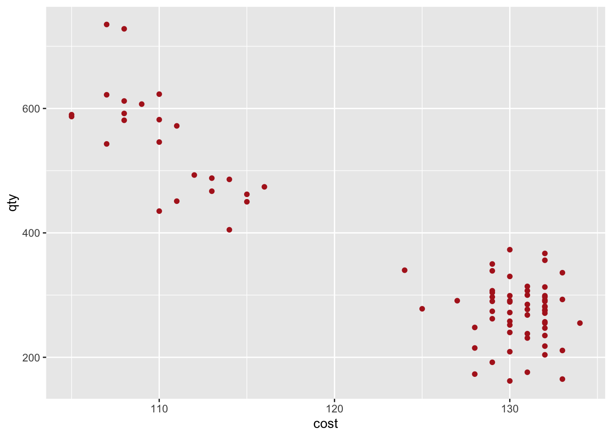
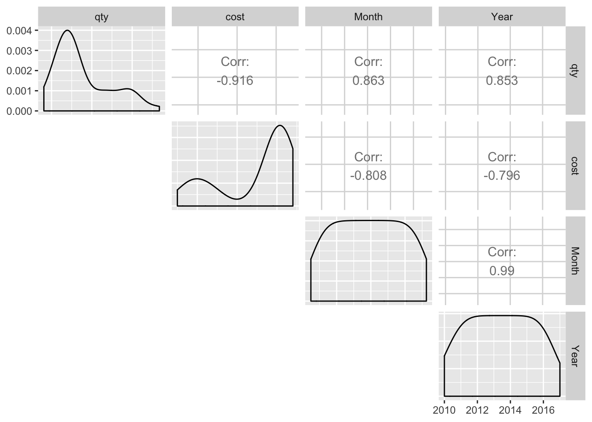
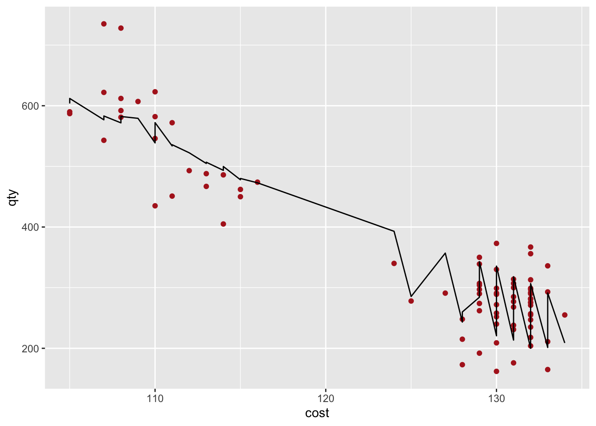

“We would like to increase our revenue, so can we raise the price of Product”X""? A question I’m often asked during Financial & Forecasting Fiscal Year Planning cycles. Using pricing as one of the levers to maximize revenue or profit margins is one of the challenging decisions businesses have to make. For offerings already in the market, how does a business determine if the pricing is right or optimal without the guesswork or intuition?
I usually start with gathering feedback on the product in question from Sales/Product Managers/Owners. Merging their feedback + my knowledge base on key features such as the competitive landscape for the product, Average Selling Price, regions/countries/industries its sold, discounts/promotions/launch initiatives, etc., provide an understanding and verifying relationships in the transactional database.
Past the intel gathering phase from subject Matter Experts and the availability of data with relevant features, the next step in my approach is to figure a customer’s price sensitivity by determining the price elasticity of the product. It is one of the several approaches that help predict the impact of pricing on product demand, and provides guidance to a company’s overall pricing strategy.
Definition of Price Elasticity of Demand(PED) from wikipedia
Price elasticity of demand (PED or Ed) is a measure used in economics to show the responsiveness, or elasticity, of the quantity demanded of a good or service to a change in its price, ceteris paribus. More precisely, it gives the percentage change in quantity demanded in response to a one percent change in price (ceteris paribus).
The R code below is a simple example of the Price elasticity analysis using a linear regression model.
Here’s a visual of the example data.

To determine which variables are strongly correlated to qty sold, let’s use GGally’s ggpairs() function.
Final_Product_data %>% select(qty, cost, everything()) %>% ggpairs(lower = "blank")
The magnitude of the correlation coeffs between qty and cost is the highest, followed by Month and Year, so a linear regression model can include all the variables.
Modeling
m.Final_product <- lm(qty ~ cost + Month, data = Final_Product_data)
sum_m.Final_product <- summary(m.Final_product)
sum_m.Final_product##
## Call:
## lm(formula = qty ~ cost + Month, data = Final_Product_data)
##
## Residuals:
## Min 1Q Median 3Q Max
## -108.934 -29.140 -4.127 32.505 158.218
##
## Coefficients:
## Estimate Std. Error t value Pr(>|t|)
## (Intercept) 400.45221 306.89425 1.305 0.196
## cost -9.21379 0.95594 -9.638 5.54e-15 ***
## Month 0.06868 0.01264 5.436 5.90e-07 ***
## ---
## Signif. codes: 0 '***' 0.001 '**' 0.01 '*' 0.05 '.' 0.1 ' ' 1
##
## Residual standard error: 48.59 on 79 degrees of freedom
## Multiple R-squared: 0.883, Adjusted R-squared: 0.88
## F-statistic: 298.1 on 2 and 79 DF, p-value: < 2.2e-16In this example, I have included only cost and Month variables with their P value at 5.543328910^{-15}, and
5.897822610^{-7} respectively, as they appear to be significant in affecting the volume of sale units.
We can try different model set-ups to find the best fit based on R2 and adjusted R2 values. Using functions in tidyverse/modelr/broom.
#Create List of models
formulas_for_lm <- list(
prod_no_log <- qty ~cost + Month,
prod_w_log <- log10(qty) ~ log10(cost) + Month
)
# Map the lm function to the list of formulas
Rsquared_fit_all <- formulas_for_lm %>%
map(lm, data = Final_Product_data) %>%
map_df(glance, .id = "model") %>%
select(model, r.squared, p.value)
#Display Rsquared
Rsquared_fit_all## model r.squared p.value
## 1 1 0.8829924 1.564806e-37
## 2 2 0.8656075 3.722364e-35#
slope_intercept_all <- formulas_for_lm %>%
map(lm, data = Final_Product_data) %>%
map_df(tidy, .id = "model") %>%
select(model, term, estimate, std.error)
slope_intercept_all## model term estimate std.error
## 1 1 (Intercept) 4.004522e+02 3.068942e+02
## 2 1 cost -9.213787e+00 9.559375e-01
## 3 1 Month 6.868009e-02 1.263543e-02
## 4 2 (Intercept) 5.217442e+00 8.894790e-01
## 5 2 log10(cost) -2.157626e+00 3.232426e-01
## 6 2 Month 1.134625e-04 1.548824e-05The best fit model appears to be model 1, so let us visualize the predicted values.
plot_model1 <- Final_Product_data %>%
add_predictions(m.Final_product) %>%
ggplot(aes(x = cost)) +
geom_point(aes(y = qty), data = Final_Product_data, color = "firebrick") +
geom_line(aes(y = pred))
plot_model1
To estimate the PE, we will need the coefficient on cost \((\Delta Q/\Delta P)\) from the model, and the average cost & average quantity sold from the dataset:
- PED \(=(\Delta Q/\Delta P)*(\bar{P}/\bar{Q})\) where \(\Delta Q\) is change in quantity, \(\Delta P\) is change in price, \(\bar{P}\) is the avg price, and \(\bar{Q}\) is the avg quantity/sales Units.
PEcalc <- function(modelresult, df) {
PE <- round(as.numeric(modelresult$coefficients[2] * (mean(df$cost)/mean(df$qty))),2)
return(PE)
}
PEcalc(m.Final_product,Final_Product_data)## [1] -3.25The PE for the first model is -3.25, which shows that a 1% decrease in price will increase units sold by 3.25%. Or a 10% decrease in price will increase units sold by 32.5% and vice-versa.
Elasticity Interpretation:
- If PED < 1 (in absolute value), demand is inelastic (we will want to increase the price because changes in price have a relatively small effect on the quantity of good demanded)
- IF PED > 1 (in absolute value), demand is elastic (we will want to decrease the price because changes in price have a larger effect on the quantity or bigger percent change in demand)
- If PED == 1 (Rev is maximized )
The optimal price includes a “markup” proportional to the price elasticity of demand.
To find out the optimal price to maximize either revenue, or profit, we simplify the model output to:
options(scipen=999)
# x is the price
# Assume no marginal cost
equation_1_nocost = function(x) x*((m.Final_product$coefficients[[1]]) + PEcalc(m.Final_product,Final_Product_data)*x+ (m.Final_product$coefficients[[3]]))
opt_price_w_no_cost <- optimize(equation_1_nocost, c(50,140), maximum = TRUE)# Assume $10 as marginal cost
equation_w_cost = function(x) (x-10)*((m.Final_product$coefficients[[1]]) + PEcalc(m.Final_product,Final_Product_data)*x+ (m.Final_product$coefficients[[3]]))
opt_price_w_cost <- optimize(equation_w_cost, c(50,100), maximum = TRUE)
The optimal price for maximizing profit is `r round(opt_price_w_cost[[1]],2)`; the maximum profit will be `$``r round(opt_price_w_cost[[2]],2)`The optimal price for maximizing revenue is 61.62; the maximum revenue will be $12339.77.
Predict the sales for a particular month
data_w_new_price <- tibble(cost = opt_price_w_no_cost[[1]], Month = as.IDate("2017-07-01"))
predict(m.Final_product, data_w_new_price, interval = "p")## fit lwr upr
## 1 1024.174 888.1762 1160.171Thanks to Allan Engelhardt for all his help on the analysis/thorough explanation of linear regression models, and the excellent and detailed Cross-Price_Elasticity article by Jack Han.
Share this post
Twitter
Google+
Facebook
Reddit
LinkedIn
StumbleUpon
Pinterest
Email